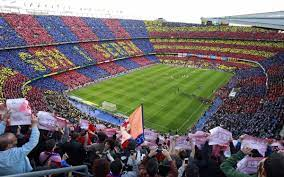

Barcelona, Spain

Barcelona, is a beautiful city on the Northeastern coast of Spain that is the byproduct of a rich and artistic history with modern infrastructure. One of the main attractions of the city is its gorgeous architecture, often the work of world renowned architects such as Antoni Gaudi. Some of the most notable works are the modern Basilica of La Sagrada Familia, and the tranquil and eloquent Park Güell.
Much of Barcelona’s charm comes down to local culture, from diverse culinary offerings, to the sunny vacation-ridden atmosphere of the beaches, and even the symbolism of nationalism and independence that Barcelona residents display. The passion of the locals is unwavering, including in famous soccer matches by one of the sports greatest clubs: F.C. Barcelona, and in numerous local artistry events. It is no wonder why many travelers to Spain feel rejuvenated and fortunate enough to have experienced the city’s irresistibly strong culture and atmosphere.
Photo Gallery

The view from the world famous Park Güell
Barcelona fans demonstrate their passion from the Camp Nou

View of a popular strip on Barcelona’s most famous beach

Stunning display of modern structure with vintage architecture at La Sagrada Familia

Nighttime view of the contrast between modern and classical Barcelona
Banff
Geographical location: North America


Banff is Canada’s first national park. The park spans 2,564 square miles. Here you can see the Rocky Mountain peaks and beautiful turquoise glacial lakes.
In addition to the magnificent nature of Banff, there are many things to explore in the downtown area. Banff Avenue and Bear Street have many stores to enjoy shopping. You can also learn of the natural and cultural history by visiting many museums and historical sites.
Photo Gallery